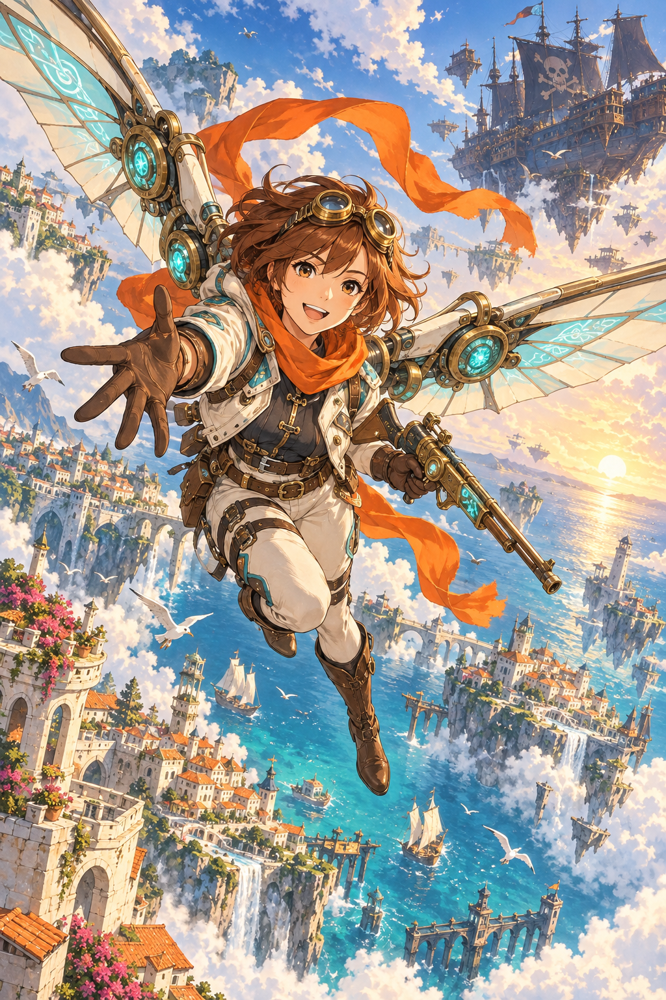

하늘길을 열어볼까?방향키 이동 · Z 사격 · X 위기 탈출

THE SKY IS YOURS✧ARCADE SHOOTER
하늘을 달리는, 단 한 번의 출격
SKY
CHASER✦
스카이 체이서
1 → 3스테이지 · 남은 목숨과 무장을 이어갑니다
세 스테이지의 그림을 불러오는 중입니다.
ENTER로 출격 · PC 키보드 플레이 권장
TAKE A BREATH
비행 일시정지
숨을 고르고 다시 하늘로.
출격 대기00:00SKY CHASER · 0.6
화면 드래그로 이동 · 자동 사격